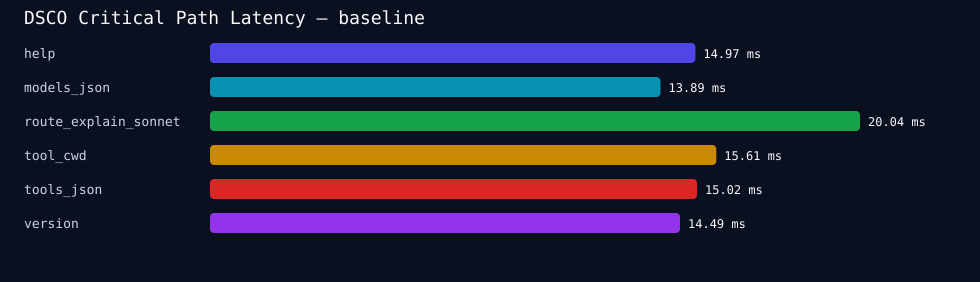
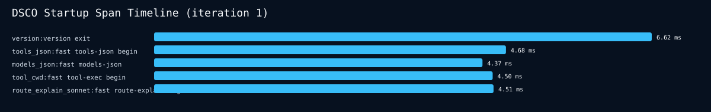
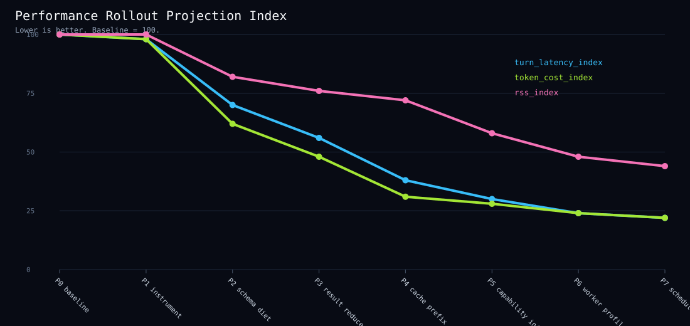

Baseline Summary
Measured with ./scripts/dsco_perf_rollout.py --runs 5 --out reports/perf_push_limit.
Case
Runs
OK
p50 ms
p95 ms
version5
5
14.49
17.04
help5
5
14.97
16.63
models_json5
5
13.89
18.24
tools_json5
5
15.02
15.58
tool_cwd5
5
15.61
19.32
route_explain_sonnet5
5
20.04
23.60
Finding: info/local fast paths are already strong. The dramatic frontier is model-turn overhead: active schemas, context growth, large tool outputs, provider routing, workers, and swarm QoS.
Measured Critical-Path Latency

Startup Span Timeline

Extracted from DSCO_PERF=json stderr marks into startup_spans.csv.
Rollout Projection

Performance Architecture Target
flowchart TD
U[User request] --> G[Command grammar parser]
G --> C[Capability-bit startup planner]
C -->|none| F0[Fast info path]
C -->|local tools| F1[Minimal VM + tool pack]
C -->|model turn| M0[Provider route cache]
C -->|swarm| S0[Load-aware swarm scheduler]
F0 --> O[Bounded output]
F1 --> R[Tool result reducer]
R --> H[Result handle / VFS page]
H --> O
M0 --> TP[Task-class tool-pack resolver]
TP --> CS[Compact active schemas]
CS --> PC[Stable prompt cache prefix]
PC --> RB[Request builder spans]
RB --> ST[Stream / first token]
S0 --> WP[Minimal worker profiles]
WP --> WR[Structured bounded worker returns]
WR --> RD[Deterministic reducer]
RD --> O
subgraph Instrumentation
P[DSCO_PERF=json spans]
B[Benchmark regression gates]
D[Dashboard metrics]
end
C -.-> P
R -.-> P
RB -.-> P
WP -.-> P
P --> B --> D
Multi-Turn Rollout State Machine
stateDiagram-v2
[*] --> Baseline
Baseline --> Instrument: benchmark suite exists
Instrument --> SchemaDiet: perf spans stable
SchemaDiet --> Reducers: active schema tokens down >= 50%
Reducers --> PromptCache: raw large outputs eliminated
PromptCache --> CapabilityInit: repeated-turn cache telemetry present
CapabilityInit --> WorkerQoS: unnecessary subsystem spans absent
WorkerQoS --> RuntimeMemory: worker heartbeat and queue behavior measured
RuntimeMemory --> Homeostasis: RSS/allocator/index budgets stable
Homeostasis --> [*]
Instrument --> Baseline: regression/failure
SchemaDiet --> Instrument: schema breakage
Reducers --> Instrument: recall bug
PromptCache --> Instrument: provider incompatibility
CapabilityInit --> Baseline: startup semantic breakage
WorkerQoS --> Baseline: scheduler starvation
RuntimeMemory --> Baseline: correctness or memory safety failure
Critical Metrics Dashboard
mindmap
root((DSCO Perf))
Startup
version_ms
help_ms
tools_json_ms
models_json_ms
route_explain_ms
max_rss_mb
AgentTurn
request_build_ms
first_token_overhead_ms
active_tool_count
active_schema_tokens
static_prompt_tokens
cache_hit_rate
Tools
dispatch_ms
stdout_bytes
context_result_bytes
offloaded_result_bytes
reducer_ratio
Provider
route_ms
connect_ms
first_byte_ms
retry_count
fallback_count
Swarm
worker_start_ms
first_heartbeat_ms
queue_delay_ms
reduce_tokens
fanout_count
Runtime
allocator_count
arena_bytes
background_cpu_pct
disk_write_mb
loaded_mcp_servers
Initiative Dependency Graph
flowchart LR
A[DSCO_PERF spans] --> B[Benchmark gate]
B --> C[Dashboard]
C --> D[Schema diet]
C --> E[Result reducers]
C --> F[Capability init]
D --> G[Prompt cache]
E --> G
F --> H[Minimal workers]
H --> I[Load-aware scheduler]
G --> J[Adaptive routing]
I --> K[Swarm throughput]
J --> K
K --> L[Homeostasis]
L --> C
Seven-Phase Execution Plan
| Phase | Name | Primary gate |
|---|---|---|
| P1 | Measurement substrate | Stable JSON spans and benchmark regression gates. |
| P2 | Schema diet and tool packs | Default active schema tokens down at least 50%. |
| P3 | Tool result reducers | Large outputs offloaded unless explicitly recalled. |
| P4 | Prompt cache architecture | Supported providers report cache reuse. |
| P5 | Capability-bit startup | Fast paths prove unnecessary subsystems absent. |
| P6 | Worker profiles and swarm QoS | High load queues instead of thrashing. |
| P7 | Runtime memory efficiency | Allocator/RSS/index budgets stable or improved. |